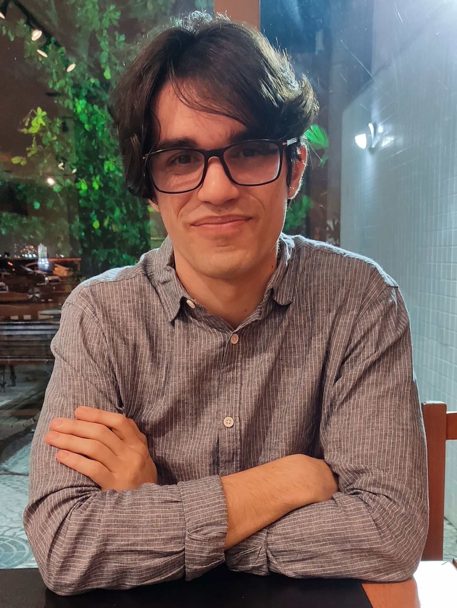

About Me
I am Ph.D in physics with an academic background in condensed matter physics and applied mathematics. I currently work as a postdoc at Shanghai Jiao Tong University, China.
I completed my Ph.D. at PUC-Rio with the a thesis in "Engineering the electronic and spintronic properties of graphene by spin-orbit coupling and periodic vacancies". More information can be found here and the presentation is available here.
My interests include physics, graph theory and programming.
Talks
Publications
-
“Magnetoelectric torque and edge currents in spin-orbit coupled graphene nanoribbons”, Matheus S. M. de Sousa, Manfred Sigrist, Wei Chen. PhysRevResearch.3.033021.
-
“Symmetry-enforced nodal lines in the band structures of vacancy-engineered graphene”, Matheus S. M. de Sousa, Fujun Liu, Mariana Malard, Fanyao Qu, Wei Chen. PhysRevB.105.155414.
-
“Vacancy-Engineered Flat-Band Superconductivity in Holey Graphene”, Matheus S. M. de Sousa, Fujun Liu, Fanyao Qu, Wei Chen. PhysRevB.105.014511.
-
“Mapping quantum geometry and quantum phase transitions to real space by a fidelity marker”, Matheus S. M. de Sousa, Antonio L. Cruz, Wei Chen. PhysRevB.107.205133.
-
“Seeing Topological Charges by Naked Eyes”, Matheus S. M. de Sousa, Antonio L. Cruz, Wei Chen. arXiv:2303.14549.
Contact
E-mail: mssousa@pm.me
Google Scholar: Profile
Github: Profile
Mastodon: Profile